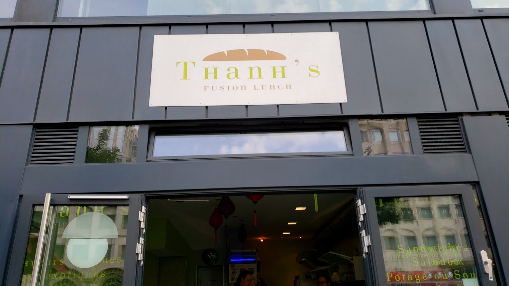
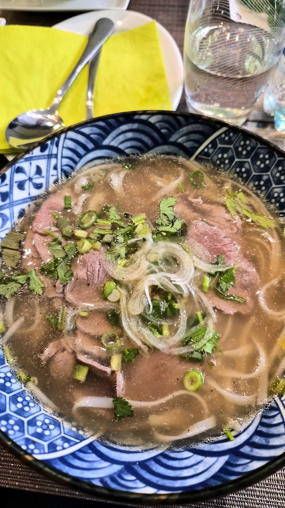
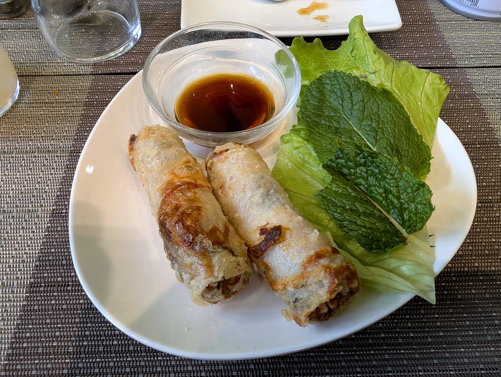
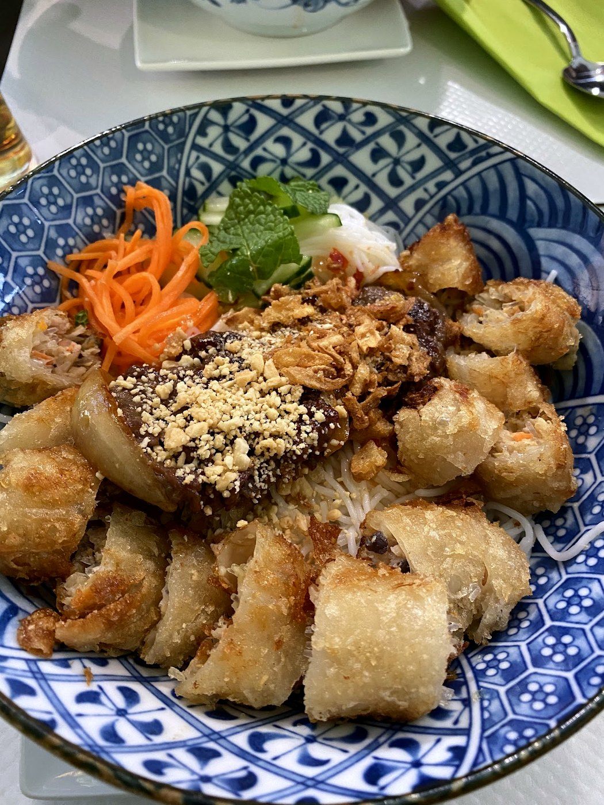
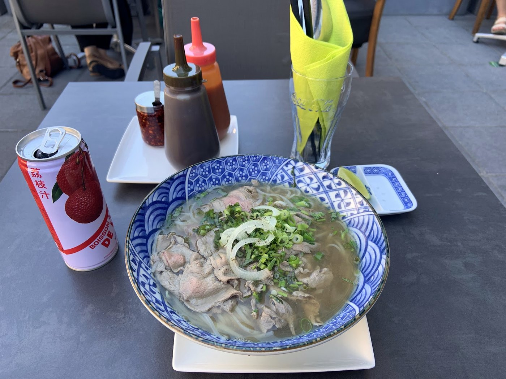
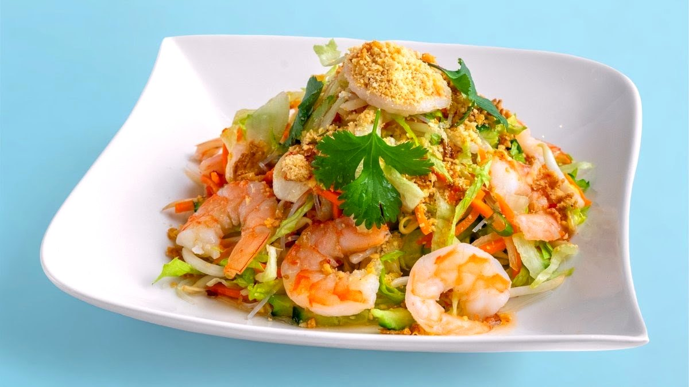
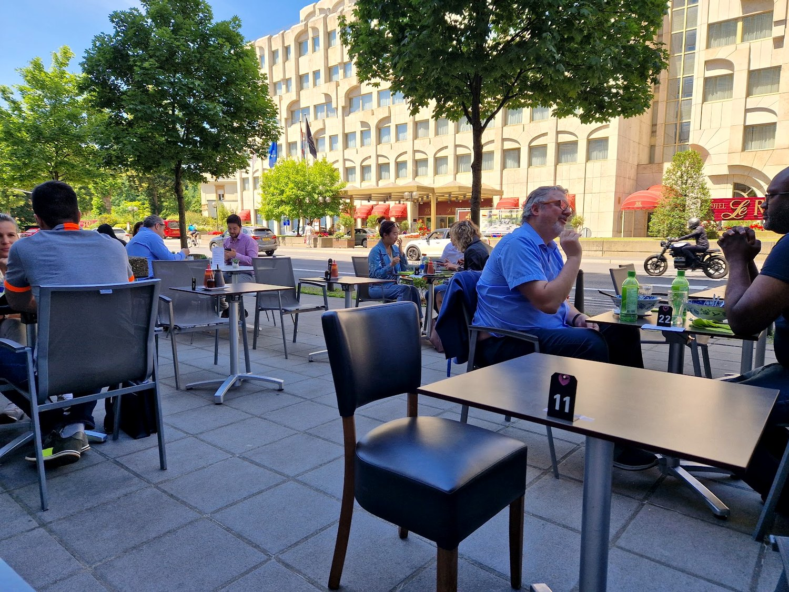

Cuisine vietnamienne · Boulevard Royal & Kirchberg
Thanh's
Le meilleur du Luxembourg.
Saveurs fraîches et exotiques du Vietnam — la cantine du midi, à deux pas du bureau.
Le meilleur du Luxembourg.
Saveurs fraîches et exotiques du Vietnam — la cantine du midi, à deux pas du bureau.

« Le meilleur du Luxembourg », d'après Paperjam.
Un grand bol de vermicelles de riz tièdes, du bœuf mariné saisi, des nems croustillants coupés dessus, une pluie d'herbes fraîches et de cacahuètes, et le nuoc-cham qui lie le tout. Frais, généreux, fait minute — et décliné au poulet, aux crevettes ou en version végé.

Thanh's, c'est la cantine vietnamienne du déjeuner : on entre, on commande au comptoir, ça arrive frais et fumant, et on repart calé pour l'après-midi. Herbes coupées le jour même, bouillons longs, portions honnêtes, options végé partout.
« Saveurs fraîches et exotiques du Vietnam et d'ailleurs. »
Deux adresses au cœur de la ville — boulevard Royal, face à l'Hôtel Le Royal, et à l'Infinity, au Kirchberg. Service le midi, en semaine.
Herbes, vermicelles, bouillons — préparés le jour, pas la veille.
Le bouillon Thanh's et le phở, en portion normale ou grande.
Bœuf, poulet, crevettes ou végé — chaque plat se décline.
Une carte courte qui va à l'essentiel — chaque plat se décline bœuf, poulet, crevettes ou végé.








Service du midi, du lundi au vendredi — fermé le week-end. Horaires indicatifs, à confirmer avec la maison.